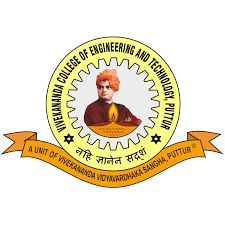

DEPARTMENT OF MCA

welcome to mca
The basic curriculum of a typical MCA programme includes topics like network and database management, electronics, mobile technologies, financial accounting, mathematics, statistics, cloud computing, Java programming etc
ABOUT US
Master of Computer Applications (MCA) is a two year professional post-graduate programme for candidates wanting to delve deeper into the world of computer application development with the help of learning modern programming language. The programme is a blend of both theoretical and practical knowledge. An MCA degree endows students’ an opportunity to work with tools meant to develop better and faster applications.
Designed to meet the shortage of qualified professionals in the IT (Information Technology) industry, an MCA degree - in India - is offered by many colleges. Infact, there are various colleges that also offer integrated MCA programmes as well.
FACULTY